首页 > 编程笔记
Word插入数学公式（图解）
在 Word 2007 以及更早版本的 Word 中，只能使用公式编辑器来输入公式。从 Word 2010 开始，功能区中新增了公式功能，其中预置了大量常用的公式样本，用户可以直接将它们插入文档中。
当然，Word 也允许用户手动输入公式的各部分。
这里我们使用一个实际案例来演示如何插入数学公式，本案例要插入的数学公式如下图所示：
2) 在文档中插入一个用于输入公式的公式编辑框，如图 2 所示，同时激活功能区中的【公式工具|公式】选项卡，该选项卡包含用于编辑公式的工具。
3) 在功能区的【公式工具|公式】选项卡中单击【根式】按钮，然后在弹出的列表中选择【平方根】，如图 3 所示。
4) 在公式编辑框中自动插入一个根式符号，按一次左方向键，将插入点移动到根式中，如图 4 所示。
5) 在功能区的【公式工具|公式】选项卡中单击【分式】按钮，然后在弹出的列表中选择【分式（竖式）】，如图 5 所示。
6) 在根式中插入分数线，按一次左方向键，将插入点定位到分母中，然后输入分母的内容，即 n(n-1)，如图 6 所示。
7) 按一次上方向键，将插入点移动到分子中，输入字母 n。然后在功能区的【公式工具|公式】选项卡中单击【大型运算符】按钮，在弹出的列表中选择【求和】，如图 7 所示。
8) 按一次左方向键，然后在功能区的【公式工具|公式】选项卡中单击【上下标】按钮，在弹出的列表中选择【上标】，如图 8 所示。
9) 将上标插入公式中，然后按两次左方向键，如图 9 所示。
10) 输入字母 x，然后按一次右方向键，输入数字 2，得到的公式如图 10 所示。
11) 按一次右方向键，然后输入一个减号，如图 11 所示。
12) 重复步骤 8)，插入一个上标，然后按两次左方向键，如图 12 所示。
13) 在功能区的【公式工具|公式】选项卡中单击【括号】按钮，然后在弹出的列表中选择【括号】，如图 13 所示。
14) 按一次左方向键，然后重复步骤 7)，插入一个求和运算符，如图 14 所示。

图14：插入一个求和运算符
15) 按一次左方向键，然后输入字母 x，如图 15 所示。
16) 按 3 次右方向键，然后输入数字 2，如图 16 所示。
17) 单击公式以外的区域，完成公式的输入。
当然，Word 也允许用户手动输入公式的各部分。
这里我们使用一个实际案例来演示如何插入数学公式，本案例要插入的数学公式如下图所示：
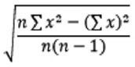
图1：输入的公式
图1：输入的公式
实现步骤
1) 将插入点定位到要输入公式的位置，然后在功能区的【插入】选项卡中单击【公式】按钮。2) 在文档中插入一个用于输入公式的公式编辑框，如图 2 所示，同时激活功能区中的【公式工具|公式】选项卡，该选项卡包含用于编辑公式的工具。
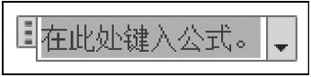
图2：插入的公式编辑框
图2：插入的公式编辑框
3) 在功能区的【公式工具|公式】选项卡中单击【根式】按钮，然后在弹出的列表中选择【平方根】，如图 3 所示。
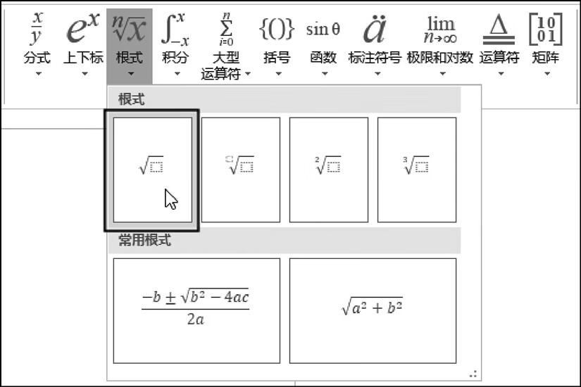
图3：选择【平方根】
图3：选择【平方根】
4) 在公式编辑框中自动插入一个根式符号，按一次左方向键，将插入点移动到根式中，如图 4 所示。
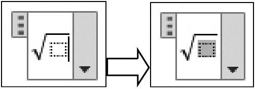
图4：插入一个根式
图4：插入一个根式
5) 在功能区的【公式工具|公式】选项卡中单击【分式】按钮，然后在弹出的列表中选择【分式（竖式）】，如图 5 所示。
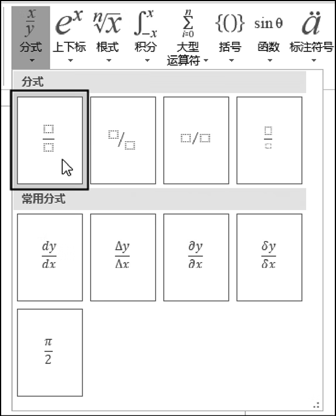
图5：选择【分式(竖式)】
图5：选择【分式(竖式)】
6) 在根式中插入分数线，按一次左方向键，将插入点定位到分母中，然后输入分母的内容，即 n(n-1)，如图 6 所示。
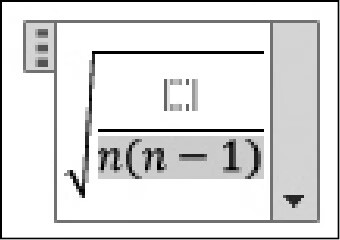
图6：输入分母
图6：输入分母
7) 按一次上方向键，将插入点移动到分子中，输入字母 n。然后在功能区的【公式工具|公式】选项卡中单击【大型运算符】按钮，在弹出的列表中选择【求和】，如图 7 所示。
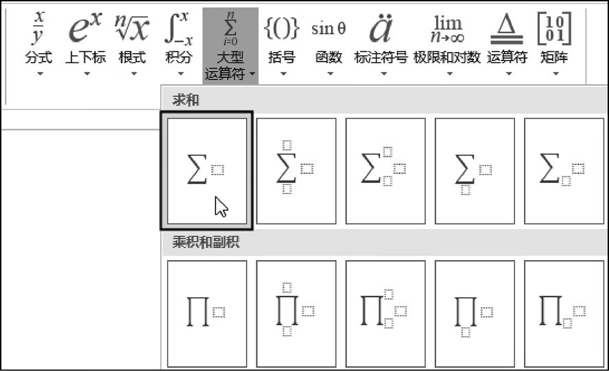
图7：选择【求和】
图7：选择【求和】
8) 按一次左方向键，然后在功能区的【公式工具|公式】选项卡中单击【上下标】按钮，在弹出的列表中选择【上标】，如图 8 所示。
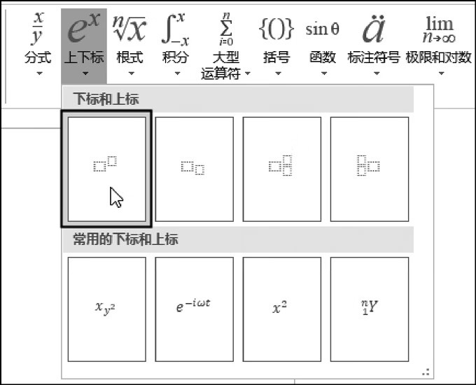
图8：选择【上标】
图8：选择【上标】
9) 将上标插入公式中，然后按两次左方向键，如图 9 所示。
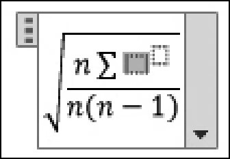
图9：插入上下标后的公式
图9：插入上下标后的公式
10) 输入字母 x，然后按一次右方向键，输入数字 2，得到的公式如图 10 所示。
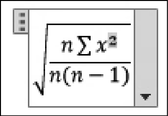
图10：输入x与上标后的公式
图10：输入x与上标后的公式
11) 按一次右方向键，然后输入一个减号，如图 11 所示。
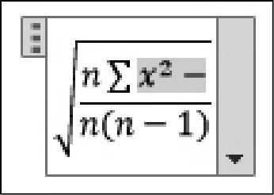
图11：输入一个减号
图11：输入一个减号
12) 重复步骤 8)，插入一个上标，然后按两次左方向键，如图 12 所示。
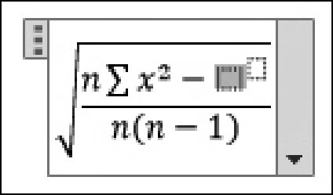
图12：插入一个上标
图12：插入一个上标
13) 在功能区的【公式工具|公式】选项卡中单击【括号】按钮，然后在弹出的列表中选择【括号】，如图 13 所示。
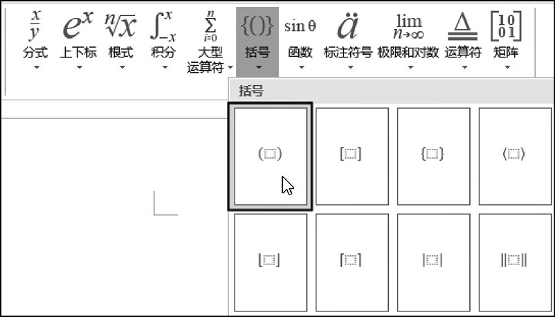
图13：选择【括号】
图13：选择【括号】
14) 按一次左方向键，然后重复步骤 7)，插入一个求和运算符，如图 14 所示。
图14：插入一个求和运算符
15) 按一次左方向键，然后输入字母 x，如图 15 所示。
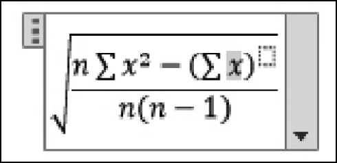
图15：输入字母x
图15：输入字母x
16) 按 3 次右方向键，然后输入数字 2，如图 16 所示。
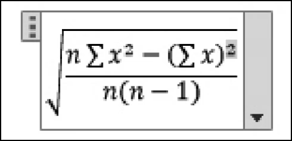
图16：输入上标
图16：输入上标
17) 单击公式以外的区域，完成公式的输入。
关注公众号「站长严长生」，在手机上阅读所有教程，随时随地都能学习。内含一款搜索神器，免费下载全网书籍和视频。

微信扫码关注公众号